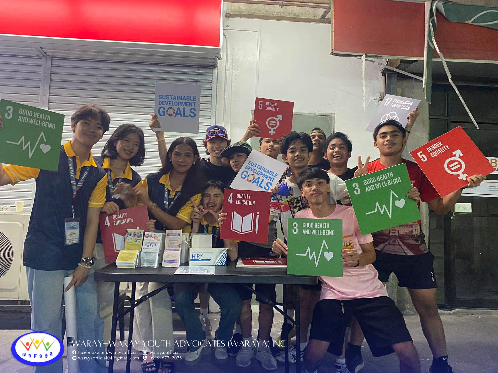
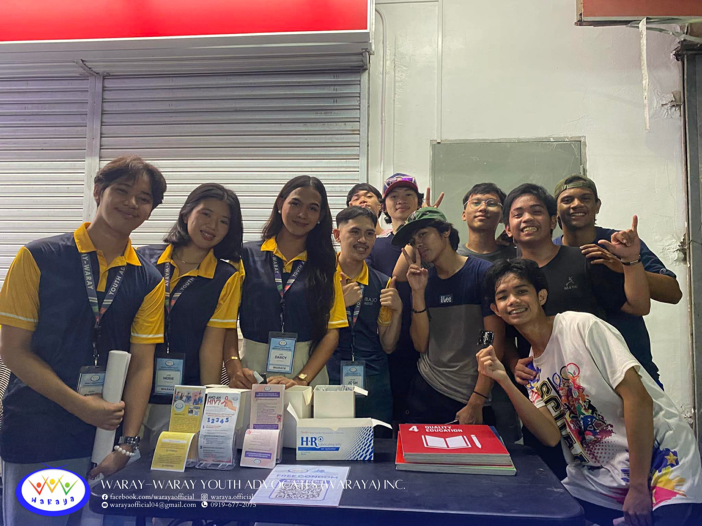

In a heartwarming celebration of fitness, music, and community, WARAYA proudly partnered with the 2026 RUNationship Community Fun Run & Concert held on Valentine’s Day, February 14, 2026. The event attracted participants of all ages, encouraging the local community to embrace a healthy lifestyle while enjoying an energetic and festive atmosphere filled with music and camaraderie. The combination of a fun run and live performances made it a memorable day for families, friends, and fitness enthusiasts alike.
More than just a recreational gathering, the event served as a platform for meaningful advocacy. Organizers used the opportunity to raise awareness about teenage pregnancy, engaging the youth in open conversations about informed choices, responsibilities, and healthy decision-making. Through interactive discussions and educational materials, the fun run became a space where participants could learn while celebrating wellness and community spirit.
The City Government of Catbalogan, under the leadership of Mayor Dexter M. Uy, played a pivotal role in supporting the initiative. Their partnership ensured that the event was not only well-organized but also impactful, reaching a wide audience and reinforcing the importance of community involvement in youth development. WARAYA expressed its gratitude for the collaboration, acknowledging the city’s efforts in promoting both health and social awareness.

As the sun set on Valentine’s Day, the 2026 RUNationship Community Fun Run & Concert concluded not just as a celebration of love and wellness, but as a reminder of the collective responsibility to nurture an informed and caring community. Participants left inspired, carrying with them the message that health, knowledge, and advocacy are essential ingredients in building a brighter future for the next generation.